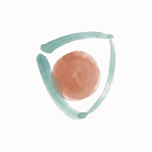
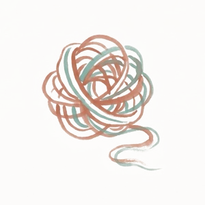
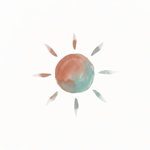
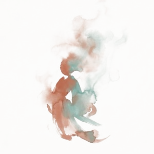
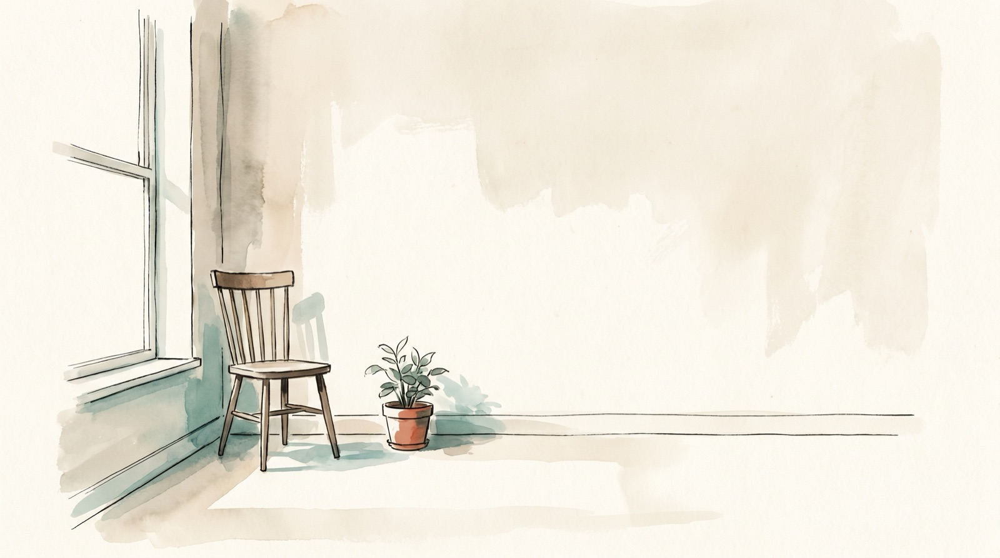

The one who performs. The one who criticizes. The one who goes quiet and agreeable. The one who still flinches like it's years ago. None of them are flaws to fix. Each took on a job to protect you long ago, and never got told it could stop.
What parts work actually does is understand what they've been holding, so the ones that have run the show for years don't have to be defeated, only finally known.
One-on-one IFS, online. A steady space where every part of you is welcome.
Come as you are — nothing to prepare.
Maybe you've noticed some version of this:
None of that means you're doing it wrong. It means you've hit the edge of what's possible without someone holding the space. Someone who can stay in Self when yours collapses, track your system in real time, and keep it slow enough to be safe.
When you work alone, you end up being the therapist, the client, and the part you're afraid of all at once. That's the real limit, not your technique. Working together, I track the whole system while you stay with your experience. That means:

They don't relax for a stranger or a worksheet. They relax in the presence of steady, unhurried Self-energy. Mine, until yours is reliably online.

No forcing exiles, no "just feel the feeling." We go at the speed your system allows, which is almost always slower, and far more effective, than the pace you'd push yourself to alone.

The critic, the pleaser, the one that numbs out. None of them are problems to fix. We get curious about what each one has been carrying, sometimes for decades.

Because they happen in your body and your relationships, not just in your insight.
Online, over video. I work with clients across timezones from Chiang Mai, Thailand.
60 minutes, unhurried. We start by checking what's present that day, find the part asking for attention, and work with it directly, gently, without agenda. You don't need to prepare or "bring" anything.
Most people start weekly or fortnightly. Parts work builds on itself, so some rhythm matters more than frequency.
Start with a single 1:1, or take a package and settle into a rhythm, whatever fits where you are. Pricing is just below.
Parts work deepens over time, so the packages are priced to make it easier to keep going. Every session is 60 minutes, online.
Not sure which to choose? Start with a single session. There's no pressure to commit to more.
I work deeply with trauma and the parts that carry it. What I don't hold is crisis or emergency care. If that's what's needed right now, I'll say so honestly and, where I can, help you find the right support.
I'm Yaniv, an IFS and integration facilitator. For six years I've held spaces where people get to be honest about what's really going on inside them: thousands of clients, 20+ multi-day retreats, and hundreds of workshops, from Thailand to London.
Most of that work has been with trauma, not as a diagnosis but as the thing underneath the pattern. People navigating dissociation, relational wounds, and the protective or self-destructive parts that formed to keep them safe. My work runs on one belief: there are no bad parts. The critic, the performer, the one that goes quiet and accommodating. Each took on a job to protect you. My role isn't to get rid of them. It's to help you build enough trust inside yourself that they no longer have to run the show.
I'm trained in IFS Levels 1 & 2 (IFS Institute UK) and certified as an Authentic Relating facilitator (ART Level 4), with further training in psychodrama and breathwork. But the thing that actually matters in a session is simpler: I can stay calm and curious near the places you've learned to avoid, until you can too.
Safe enough to be real, real enough to be changed.
We slow down and find the part that's loudest right now. Most people leave with a felt sense of more space around something that used to feel fused.
The parts that usually shut things down begin to let you get closer. You notice you can stay curious for longer before you blend.
Returning to calm, curious Self stops feeling like luck. You start catching the pattern in daily life, not only in session.

Book a 1:1 session. We'll meet online, find the part that's asking for attention, and work with it directly, at the pace your system allows.
Come as you are. You don't need to prepare or "bring" anything, just a quiet hour and a willingness to get curious about what's there.
60 minutes · online · pick a time on Calendly